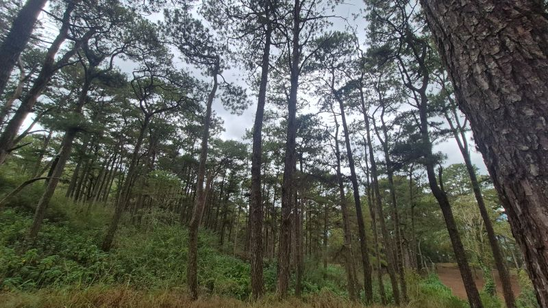
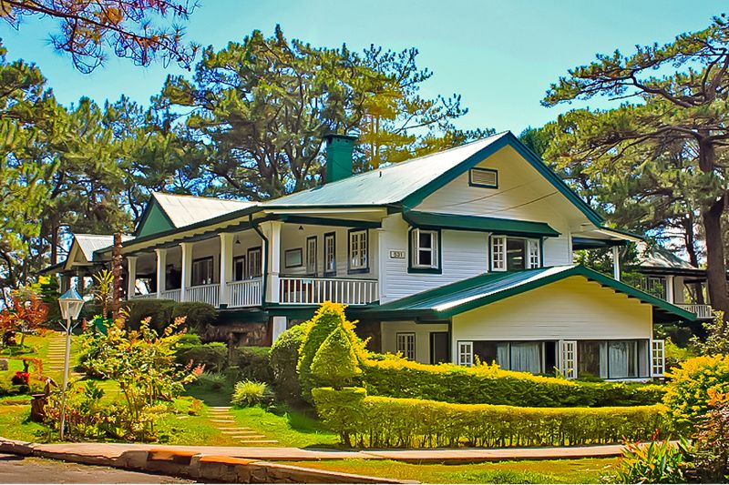

Camp John Hay
Originally established in 1900 during the Philippine-American War on Ibaloi pastureland (historically called Kafagway) and officially designated a U.S. military reservation in 1903 by President Theodore Roosevelt. It was named after U.S. Secretary of State John Milton Hay. Today, it is a a prominent mixed-use tourist destination and forest watershed reservation.

